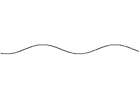

|  |
| Click the picture to repeat. |
| Here is a graph of fBm with H = 1/2. |
| From this H, the
expected value of the product of the increments is zero, so |
| In fact, the increments are independent, and index H = 1/2 fBm is just standard Brownian motion. |
| Click on the picture to see the corresponding picture with 1, 2, 5, 10, 15, 20, 25, 30, 35, 40, 45, and 50 terms. |
Return to roughness.